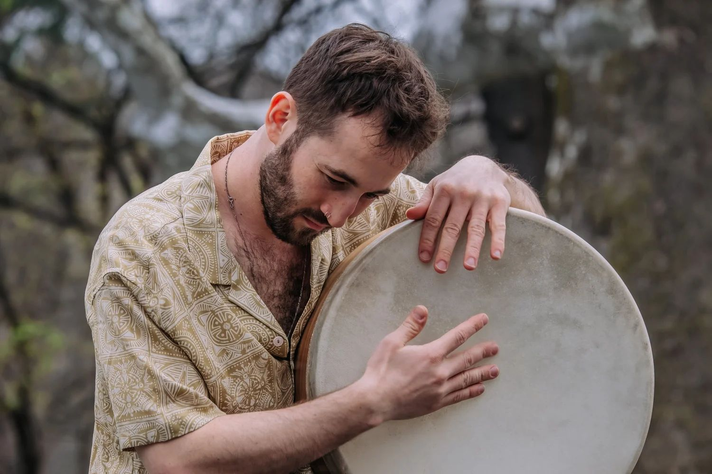
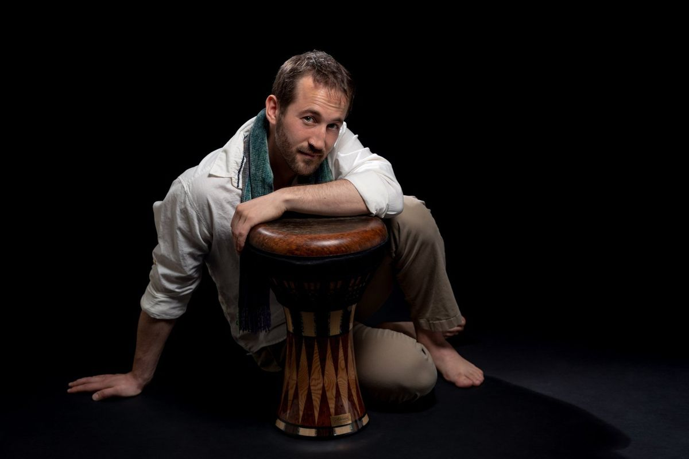
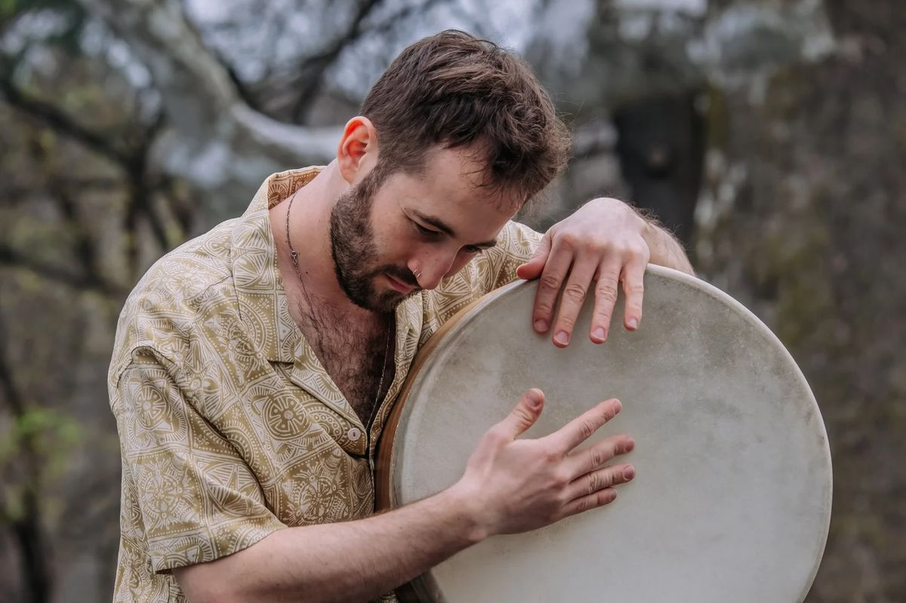

Nadav Friedman
Traditions in Rhythm
Percussionist on frame drums, darbuka and riq. Creating original productions at FeelBeit Jerusalem and playing with some of Israel's most adventurous artists.
Next shows
What Nadav is doing
Nadav creates original percussion productions for FeelBeit in Jerusalem, and accompanies artists including Itai Armon, Shimon Buskila, Rotem Cohen and Bombaras.
 Original productions
Original productions
Mirror & Alma de Bata
Evenings Nadav composes and directs, where percussion leads and musicians from different traditions meet.

On stage withAccompanying artists
Persian, Moroccan, Algerian, Balkan and Hebrew song. Frame drums, darbuka and riq for singers and ensembles.

StudyLessons & workshops
Middle Eastern percussion and drum set, privately or in groups, built on Nadav's own method.
Recent collaborations


A percussionist of many traditions
Nadav grew up near Tel Aviv, found the North African roots of his music in Jerusalem, and spent three years as one of Boston's busiest Middle Eastern percussionists. Since coming home in 2023 he has turned fully to percussion: the frame drum, darbuka and riq, played with singers and ensembles across Israel and in productions of his own.